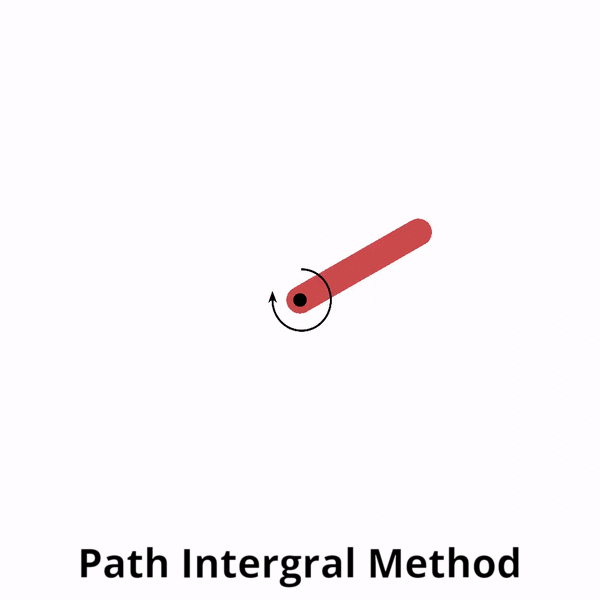
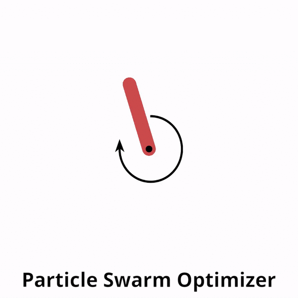
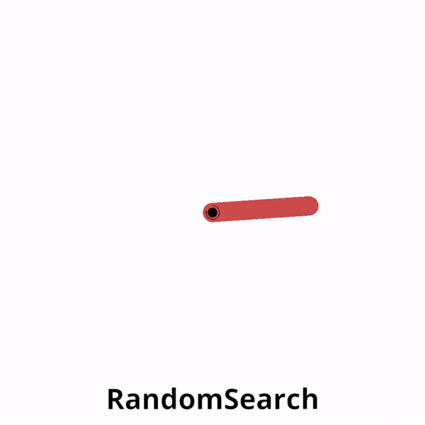
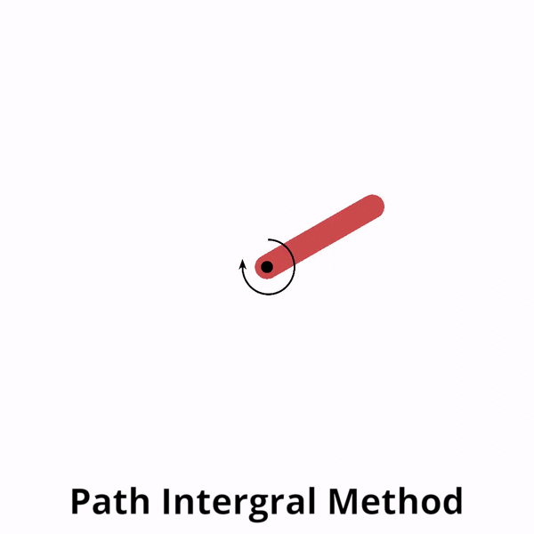
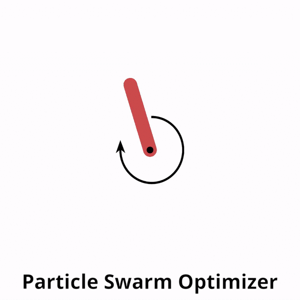
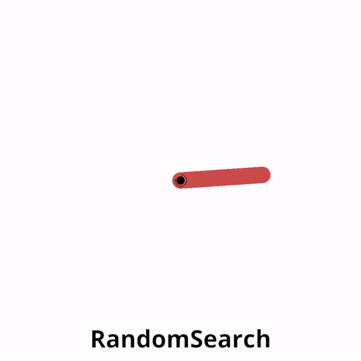

About BlackBox_MPC¶
This package provides a framework of different derivative-free optimizers (powered by Tensorflow 2.0.0) which can be used in conjuction with an MPC (model predictive controller) and an analytical/ learned dynamics model to control an agent in a gym environment.
 





{kind=link}
{kind=link}
{kind=link}


Derivative-free optimizers available so far:
Cross-Entropy Method (CEM) - cem reference
Covariance Matrix Adaptation Evolutionary-Strategy (CMA-ES) cma-es reference
Path Intergral Method (PI2) pi2 reference
Particle Swarm Optimizer (PSO) pso reference
Random Search (RandomSearch)
Simultaneous Perturbation Stochastic Approximation (SPSA) spsa reference

The package features other functionalities to aid in model-based reinforcement learning (RL) research such as:
Parallel implementation of the different optimizers using Tensorflow 2.0
Loading/ saving system dynamics model.
Monitoring progress using tensorboard.
Learning dynamics functions.
Recording videos.
A modular and flexible interface design to enable research on different trajectory evaluation methods, optimizers, cost functions, system dynamics network architectures or even training algorithms.
The easiest way to get familiar with the framework is to run through the tutorials provided. An example is shown below:
from blackbox_mpc.policies.mpc_policy import \
MPCPolicy
from blackbox_mpc.utils.pendulum import PendulumTrueModel, \
pendulum_reward_function
import gym
env = gym.make("Pendulum-v0")
mpc_policy = MPCPolicy(reward_function=pendulum_reward_function,
env_action_space=env.action_space,
env_observation_space=env.observation_space,
true_model=True,
dynamics_function=PendulumTrueModel(),
optimizer_name='RandomSearch',
num_agents=1)
current_obs = env.reset()
for t in range(200):
action_to_execute, expected_obs, expected_reward = mpc_policy.act(
current_obs, t)
current_obs, reward, _, info = env.step(action_to_execute)
env.render()
There is an option of logging some of the training stats in tensorboard as shown below.

Guide